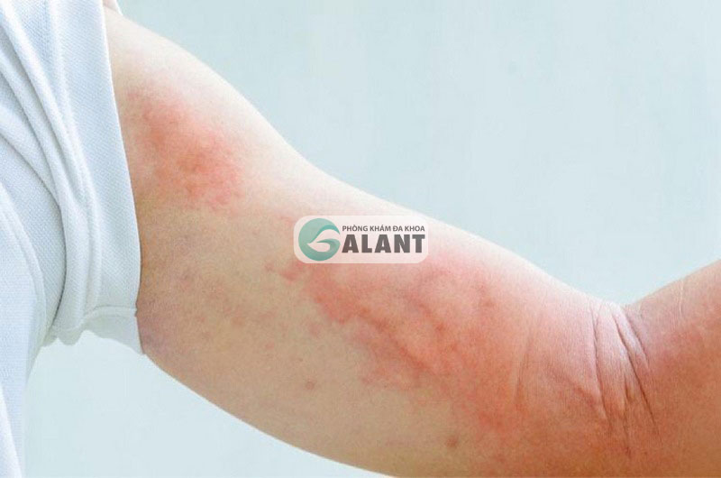

1.HIV là gì?
HIV là 1 hội chứng suy giảm miễn dịch ở người do nhiễm phải virus HIV (Human Immunodeficiency Virus),Virus gây nên bệnh HIV thuộc họ Retroviridae, là loại virus có vật chất di truyền là RNA một sợi dương có áo ngoài. Khi xâm nhập vào cơ thể, virus nhân lên và tấn công hệ miễn dịch của người bệnh bao gồm các đại thực bào, các lympho bào T. Kết quả làm suy giảm chức năng miễn dịch, tạo điều kiện cho sự phát triển hoặc xâm nhập của các vi sinh vật gây hại nên HIV còn gọi là bệnh cơ hội.

2.Lịch sử của bệnh HIV
HIV-1 bắt nguồn từ Trung Phi vào nửa đầu thế kỷ 20, khi một con tinh tinh có liên quan đến vi rút đầu tiên đã lây nhiễm cho người. Dịch bệnh lây lan toàn cầu bắt đầu vào cuối những năm 1970, và AIDS đã được công nhận vào năm 1981
3.Hệ quả của bệnh HIV
Nhiễm vi rút gây suy giảm miễn dịch ở người (HIV) là hậu quả của nhiễm 1 trong số 2 retrovirus tương tự nhau (HIV-1 và HIV-2) chúng phá hủy tế bào lympho CD4+ và làm giảm khả năng miễn dịch qua trung gian tế bào, tăng nguy cơ nhiễm trùng và ung thư.

4.Các để phòng ngừa bệnh HIV
Việc tránh có quan hệ tình dục là biện pháp phòng tránh HIV/AIDS và các nhiễm trùng lây truyền qua đường tình dục hiệu quả nhất. + Đã có bạn tình hoặc đã lập gia đình, việc sống chung thủy đối với cả hai người là cách phòng tránh hữu hiệu nhất cho việc lây nhiễm HIV/AIDS và nhiễm trùng lây truyền qua đường tình dục.